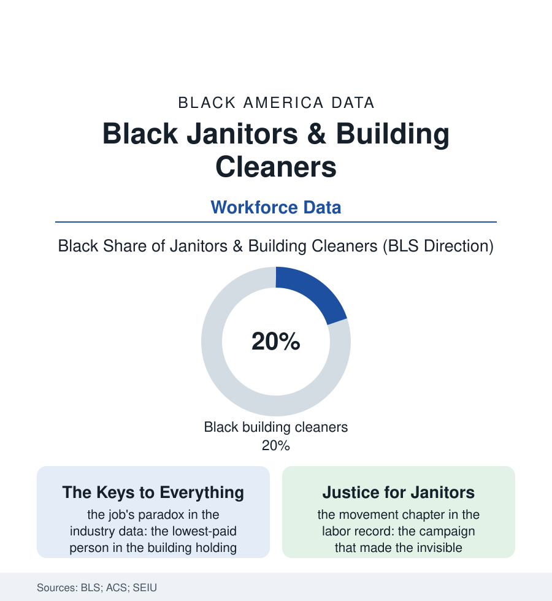

Black Employment
The Invisible Shift: Janitors and the People Who Clean the Building
One building cleaner in five is Black. They arrive as the office empties, hold the keys to everything, and anchor some of the labor movement's most famous victories. The cleaning file.

At six o'clock the office towers of America change hands: the credentialed leave, and the cleaners — one in five of them Black, keys at the belt, cart in the corridor — take possession of the whole building until dawn. Janitorial work is among the largest occupations in this book and the literal definition of its invisible labor. This article reads the cleaning file. Their names belong in this book precisely because the buildings omit them daily, almost entirely.
The Night's Economy
The structure repeats the service file's pattern with its own twists: the cleaning contracted out to the national firms (the building's owner never employing the people who clean it — the fissured workplace of the labor file, its accountability dissolved by design), the wages at the BLS floor, the shift's hours inverting the worker's life against her family's (the evening commute against the traffic's grain, the children's homework supervised by phone, the sleep taken in the day's noise) — the night file's economics carried by the direct-care and security files' same population. The health ledger is the occupation's own in the exposure studies: the chemical rows (the cleaning agents' respiratory toll, the asthma file's occupational chapter written in supply closets), the musculoskeletal map of the mop and the vacuum and the trash run, the injury data's quiet totals. Against the terms stands the workforce's seniority in American labor symbolism, and the file insists on the record: the janitor is the movement's recurring protagonist — the Memphis sanitation men of 1968 whose strike sign, four words long, remains the labor file's most famous text; the Justice for Janitors campaigns of the 1990s that reinvented organizing for the fissured age (marching the invisible workforce through the downtowns at noon, in uniform, in the thousands — the building owners' tenants shamed at their own addresses — and winning the master contracts the economists had pronounced extinct), the school custodians of the education file's buildings (the custodian as the school's second institution, the man who knows every child and every boiler, his rows in the district data among its longest tenures). The occupation's dignity economy is not a metaphor in the interview data; it is the workers' own account — the building known entire, the tenants' lives read in their trash with a sociologist's eye, the craft of the floor finished to a shine no daytime eye will credit to a name.
The Contract's Future
The modern pressures are the era's standard pair, arriving at the supply closet together: the contracting squeeze (the rebid cycle shaving the crew — the same square footage, fewer hands, the speed-up measured in the injury rows) and the technology file's slow entrants (the robotic scrubber working the lobby beside its human colleague, the sensors counting the restroom's traffic to schedule its cleaning — the occupation's automation arriving, characteristically, as an intensifier before it arrives as a replacement). The counter-movement is the union's density map: the big metros' master contracts holding the wage-and-benefit standard the nonunion suburbs undercut, the airport and university campaigns extending the model's logic (the anchor institution's cleaning crew as the winnable unit), the pandemic's brief, bright reclassification — the essential worker's applause season, the hazard pay's quarter — receding in the wage data to the occupation's old normal with a speed the workers' own commentary records without surprise. The file closes where the shift does: the building at dawn, immaculate, its makers gone before the first tenant badges in — the clean desk, the emptied bin, the shined floor read by the day shift as the building's natural state, like weather. The labor that produces the appearance of effortlessness is, in every file of this book, the labor most likely to be Black, female, night-shifted, and uncounted. The census counts two million cleaners. The towers count on them.
Reading the Cleaning Data
The cleaning file is the employment section's foundation, literally swept: the work beneath the work, done in the dark, priced at the floor. The BLS publishes the headcount. The building at 6 a.m. — every surface speaking — publishes the craft, unsigned. The signature is the shine itself, initialed nightly.
More in Black Employment
The Black Unemployment Rate: The Two-to-One Pattern
Black unemployment runs at roughly twice the White rate — 5.5 percent against 3.3 percent in annual averages — a ratio stable across five decades of federal data. How it is measured and why it persists.
Black Median Weekly Earnings: The 80-Cent Ratio
Black full-time workers earn a median of about $900 a week — roughly 80 cents for every dollar White workers earn. The BLS earnings data by group, gender, and occupation.
Black Labor Force Participation: Working at National Rates
Black labor force participation runs at roughly the national rate — and Black women participate at higher rates than White women. The BLS participation data.
Source: U.S. Bureau of Labor Statistics; Census ACS data; Service Employees International Union Justice for Janitors research; occupational health studies.